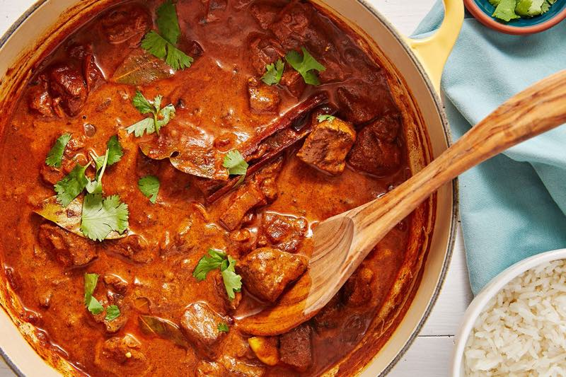

- Chicken Makhani (Butter Chicken)
- Samosas (Deep-Fried Potato/Veggie Dumpling)
- Aloo Gobi (Potato and Cauliflower)
- Naan (Flatbread)
- Matar Paneer (Peas and Cooked Cottage Cheese)
- Cuisine and Food
- Rogan Josh (Curried Meat)
- Kulfi
- Chutney (Fruit Sauce)
- Pongal
- Misal
-
Chicken Makhani (Butter Chicken)

Butter chicken is mouth-watering, tender chicken, cooked in a spiced tomato sauce. It’s traditionally cooked in a tandoor (a cylindrical clay or metal oven), but may be grilled, roasted or pan-fried in less authentic preparations. Always make the gravy by first cooking fresh tomato, garlic, and cardamom down into a bright red pulp. This pulp is then pureed after cooling. Then, the chef adds butter, various spices, and Khoa (dried whole milk). Vegetarian Indian Dish Option: Though a lot of traditional Indian food uses meat, there are plenty of Indian vegetarian dishes. You can make your own butter chicken vegetarian by substituting chicken for tofu. You can mimic the taste and texture of chicken by tossing tofu pieces with corn starch. Then, bake the pieces in the oven and voila! You have slightly crispy, delicious, buttery vegetarian “chicken”.
Aloo Gobi (Potato and Cauliflower)

Aloo Gobi is a dry, vegan Indian dish, made with potatoes (aloo), cauliflower (gobi), and Indian spices. It has a warm, yellow-orange color, because it uses a staple in Indian dishes: turmeric. Aloo Gobi occasionally contains kalonji and curry leaves as well. Other common ingredients include garlic, ginger, onion, coriander stalks, tomato, peas, and cumin. Throw it all together to roast in the oven and you’ve got one of the most popular dishes ordered in Indian restaurants.
Naan (Flatbread)

If you’ve never experienced good naan bread, your life has been much less delicious than it could be. Naan is a leavened, oven-baked flatbread. You normally serve Naan with all meals. This bread is the perfect combination of chewy and crispy, buttery and garlicky. It’s exactly what every Indian dish needs to complement the otherwise bright and intense flavors. There are many different types of naan breads depending on what you’re in the mood for.
- Butter and garlic naan bread are the classics.
- Paneer naan is a delicious Indian cheese type.
- Chili naan is great for those spice fiends.
- And of course, there’s always the classic, no-fuss, plain naan.
However you eat it, naan acts as almost a spoon to soup up sauce or dipped into chutneys. An Indian meal isn’t complete without naan at its side.
Matar Paneer (Peas and Cooked Cottage Cheese)

Here’s another for the “Indian vegetarian dishes” category! Matar paneer comes from regions of northern India. It’s made up of a yummy tomato sauce over paneer (farmer’s cheese) and peas, and spiced with garam masala. Like many Indian dishes, matar paneer is best when paired with a cooling side dish, like cream or bread. Depending on the region, it’s likely to be served with rice, naan, paratha, poori, or roti. Enjoy dipping your bread (or Naan) into the tomato gravy after you eat up the cheese and veggies. Whether you choose naan, yogurt, aloo, or cream, to pair with this dish, your taste buds will thank you!
Samosas (Deep-Fried Potato/Veggie Dumpling)

Samosas are a very popular traditional Indian Dish. Probably because samosas are a tasty, fried, or baked pastry with savory fillings. Spiced potatoes, onions, peas, and lentils fill traditional samosas. But sometimes, they are made with ground lamb, ground beef or ground chicken. Good news for all of you Indian food lovers and solely plant-based eaters. Indian samosas are usually vegan! That means the pastry is free of eggs and dairy products. Samosas are often accompanied by a sweet mint sauce or chutney (scroll down for Chef Marie’s sweet and savory chutney recipes!). These puffy treats are common street food. You can find tourists and Indian natives alike eating them as a midday snack or a side to the main dish.
Rogan Josh (Curried Meat)
Rogan josh is a staple of Kashmiri (region in northern India) cuisine. It’s one of the main dishes of a Wazwan: a Kashmiri multi-course meal. Rogan Josh consists of braised lamb chunks cooked with gravy. Generally, Indian chefs make this gravy from browned onions, yogurt, garlic, ginger, and aromatic spices. Known for its brilliant red color, a classic rogan josh uses liberal amounts of dried Kashmiri chilies. Make sure to de-seed these babies before you use them unless you’re a glutton for punishment. Though they are less hot when de-seeded, Kashmiri chilies tend to be milder than cayenne chilies. You will find cayenne chilies in many other Indian dishes. Most of the spiciness from a rogan josh comes from the fragrance of the dish rather than the heat. It’s a yummy treat that is mild enough for Western palates, but intense enough for spice-lovers. If you love lamb, this dish is a must-try.
Tandoori Chicken (Chicken Marinated In Yogurt and Spices)
Tandoori chicken is a popular North Indian dish consisting of roasted chicken prepared with yogurt and spices. The name comes from the type of cylindrical clay oven, a tandoor, in which the dish is traditionally prepared. The chicken is marinated in yogurt and seasoned with the spice mixture tandoori masala. Indian chefs traditionally use cayenne pepper, red chili powder, or Kashmiri red chili powder to give it a fiery red hue. This dish goes so well with steaming basmati rice and crispy naan.
Masala Chai
There’s nothing like the experience of stopping at a chaiwala on an Indian street and ordering a steaming cup of masala chai. The beverage has gained worldwide popularity, becoming a feature in many coffee and teahouses. Indians make masala chai by brewing black tea with a mixture of aromatic spices and herbs. Traditionally, the chai recipe calls for green cardamom pods, cinnamon sticks, ground cloves, ground ginger, black peppercorn, and black tea leaves. In international tea shops, it’s often sold in a teabag form, with a variety of revolving recipes. But once combined with steaming hot milk (or your favorite non-dairy milk!), it’s delicious all around, whether found in India, your hometown, or made by you with the help of Chef Marie!
Kulfi
Kulfi is a traditional Indian ice cream made with slowly simmered whole milk. Although the long-simmering process results in a loss of volume, it makes up for it with a delicious, nutty, caramelized flavor. The ice cream is characterized by its unusual, conical shape, a result of using traditional, special molds with tight-fitting lids. Kulfi is usually flavored with traditional Indian ingredients such as pistachio, rose water, and saffron, although some cooks prefer to flavor it with fruits such as berries. It is believed that kulfi was invented by the ancient inhabitants of the Himalayas during the Mughal Empire era.
Cuisine - Indian Food

Indian food and cuisine not only form an integral part of the culture of India but are also one of the critical factors of India's popularity worldwide. The style of cooking varies from region to region, though unanimously, Indian food has a significant reputation for its extensive use of spices and herbs. Just like dances, religious practices, language and clothes, you will also find a wide variety of food throughout the country. Almost every region is known for a signature dish or ingredient.
The staple, however, throughout the nation consists mostly of rice, wheat and Bengal gram (Chana). While vegetarian food is an integral part of Gujrati South Indian and Rajasthani cuisines, non-vegetarian dishes form a central part of Mughlai, Bengali, North Indian and Punjabi cuisine. It is also interesting to note that specific cuisines like that of Kashmir have also been influenced by foreign cooking styles from Central Asia, Persia and Afghanistan.
Chutney (Fruit Sauce)

As mentioned above, chutney (or “chatni”) is a sauce that is a flavorful sweet pair to savory samosas. It’s a relish made of various types of fruits, herbs, and spices, and it originated in India over 2,000 years ago. Heads up again, vegans, this is one for you. Make this chutney with brown sugar, turmeric, red wine vinegar. Add a smattering of other lip-smacking goodies such as mango chutney is a tangy treat in a world of Indian spiciness. Though usually fruity, savory chutneys are also a thing. Both mango and onion chutney recipe was specially crafted by Chef Marie to be the perfect side pairing for any Indian food meal.
Pongal

Pongal is a sweet rice dish that is usually eaten during special or ceremonial occasions in Sri Lanka. It is usually cooked in a clay pot over an open fire. Milk and water are boiled first, and according to Tamil beliefs, if the liquid spills over the pot it will bring good luck and prosperity to the family. The preparation of pongal is a family affair because each family member ceremonially adds a handful of rice to the pot. Subsequently, remaining rice is added to the dish with mung beans, cane sugar, and ground cashews. Pongal is served on banana leaves, and before it is consumed the entire family says their prayers to the Sun god.
Eating with Hands
Eating with hands may not sound great to many people. However, it has many benefits. Fingers being heat receptors, they prevent your mouth from burning when the hot food is put inside. You get to check the temperature before eating the food. Other than that, you tend to eat slower when you dine with hands — this aids in digestion. Traditionally, the right side is used to eat, and the left hand is considered to be dirty. One must thoroughly wash his/her hands with soap and water before eating. This practice makes the eating process very hygienic. Eating with hands is a widespread practice in South and East India, but it's a bit rare in North and West India. In North and West India, people use spoons to pick up the rice to eat but use fingers to break down the bread.
Misal

Misal is a specialty dish of the Indian state of Maharashtra, its name literally translated to a mixture of everything, so the ingredients vary from cook to cook. However, a combination of these ingredients is the most common in a typical misal: curd, pav, moth bean or pea curry, gravy, spiced potatoes, and garnishings such as onions, coriander, and tomatoes. It is mandatory for a true misal to be spicy, while the base needs to be crunchy. Visually, it should look like a work of art, with lots of colors - typically red, brown, orange, and green. The earliest mention of the dish appeared around the early 20th century.